Spirit Blossom
A fictional universe from the Runeterra Prime stories told during the Ionian Spirit Blossom festivals, as well as a possible afterlife in the Ionian myths.
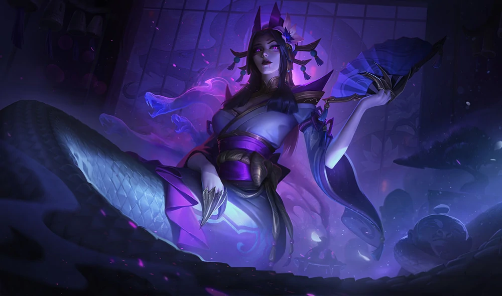
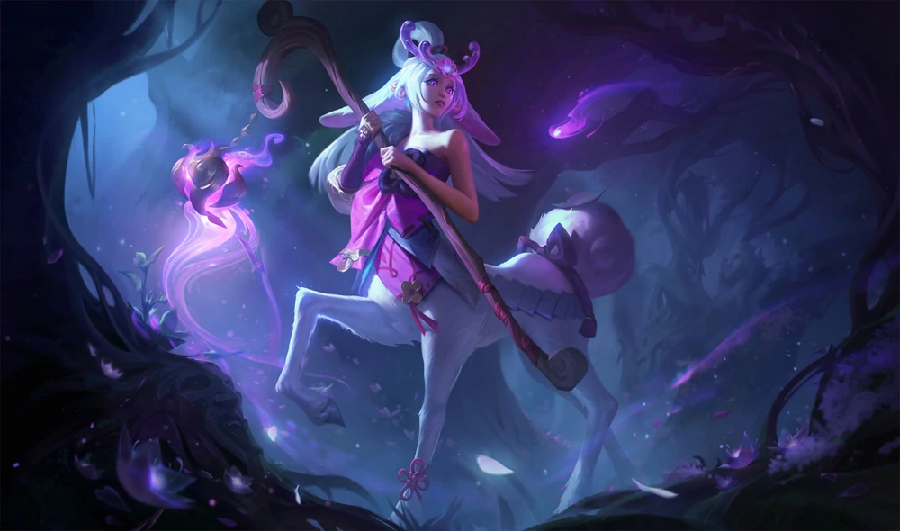
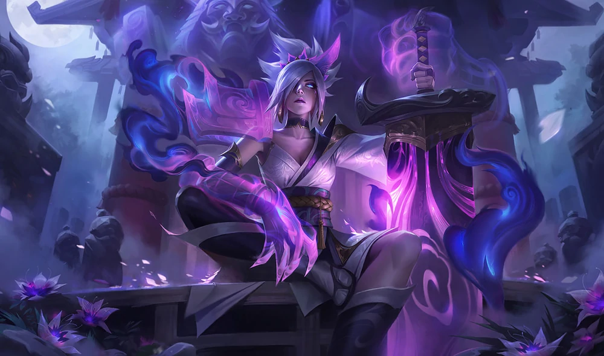
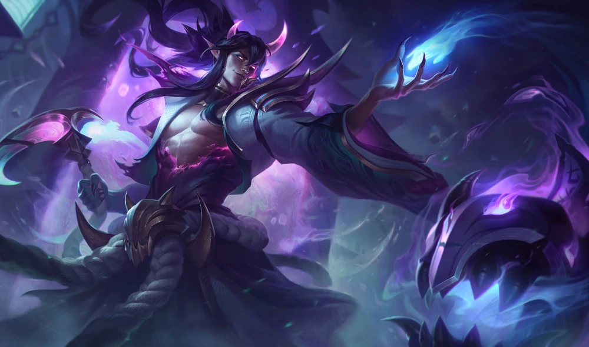
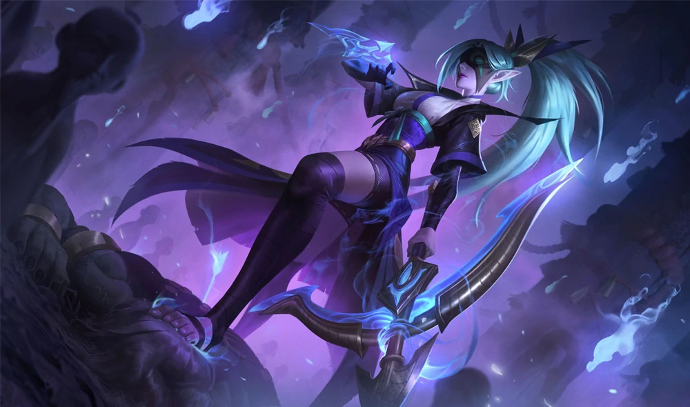
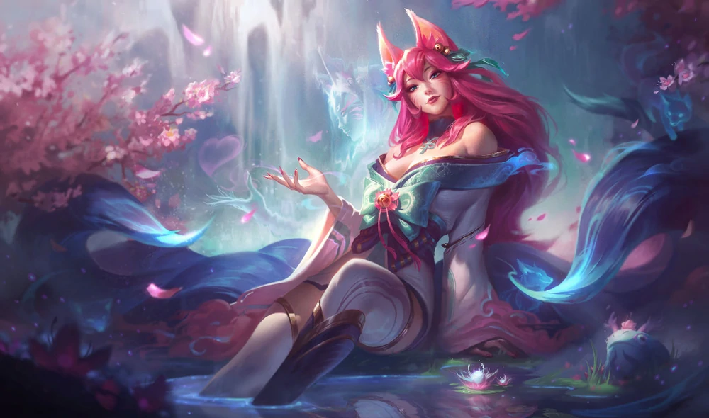
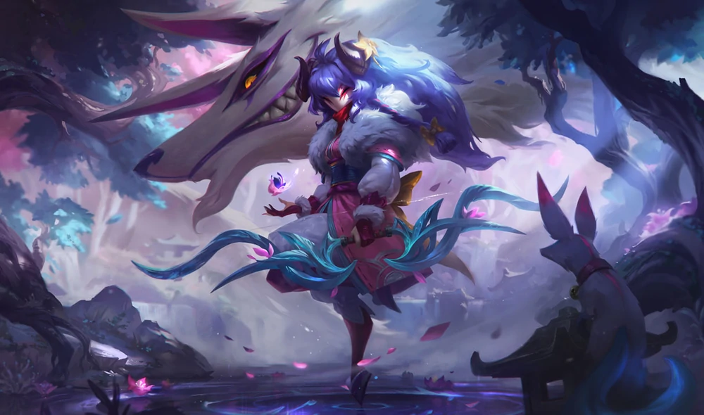
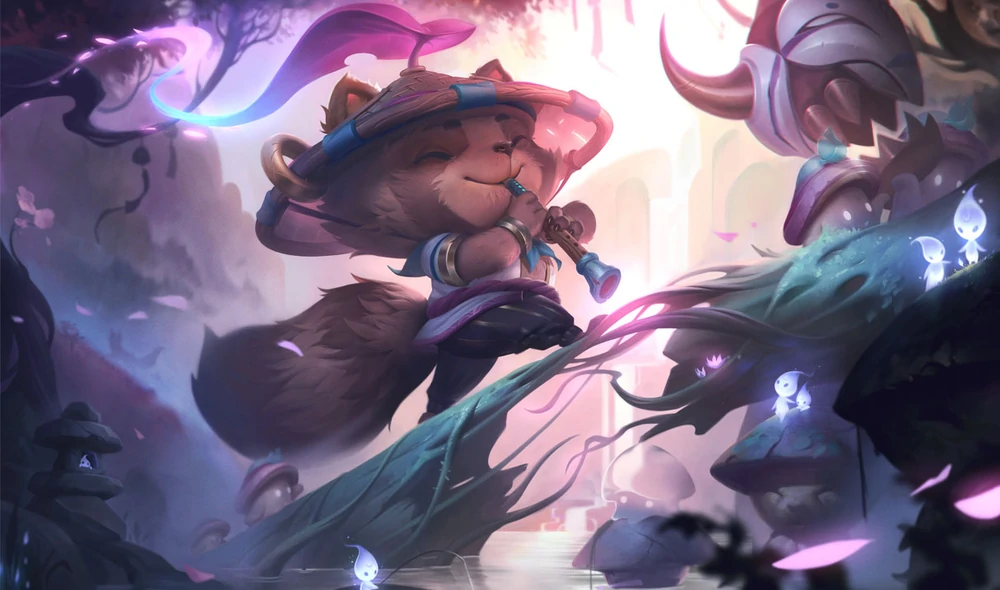
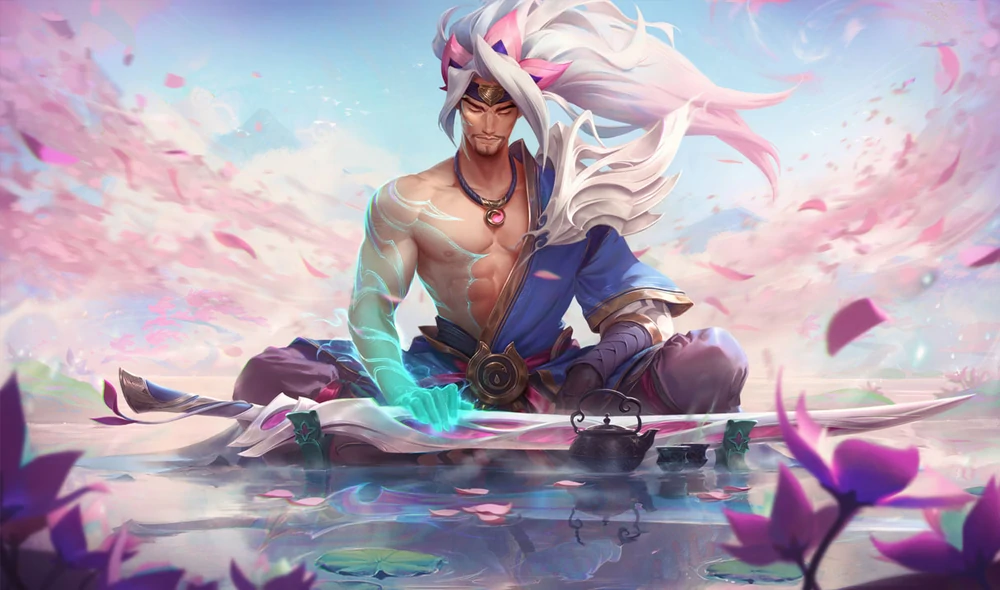
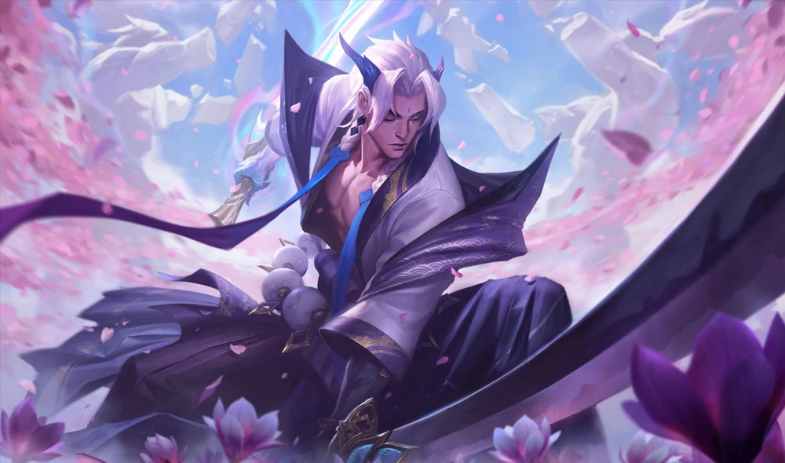
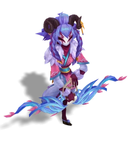
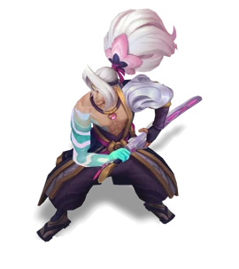
Spirit Blossom Cassiopeia
Rumored to have once been a beautiful princess, legend says Cassiopeia vanished into the mountains when her sister staged a coup, never to return. So great was her beauty, and so renowned her cunning, that a shrine was built to honor this 'spirit of temptation', until her story was accepted into popular folklore.Spirit Blossom Lillia
A shy fawn spirit, Lillia once served as the guardian of a sacred Ionian forest—until her grove was destroyed and cast into flame. Consumed by loss, she now slumbers in the spirit realm, reliving the destruction in an unending nightmare—unaware of the timid hope still waiting to bloom...Spirit Blossom Riven
A brave warrior from an ancient land, Riven was ignobly cut down in the heat of battle thousands of years ago, her sword shattering in the process. Unable to find peace, she obsessively scours an otherworldly battlefield for pieces of her broken blade, possessed by a horrific darkness that guides her into oblivion.Spirit Blossom Thresh
An ancient demon of obsession, Thresh delights in tormenting the spirits of those he deems as flawed, but blossoming with potential. He haunts the spiritual afterlife as a supreme collector of souls, tempting the dead away from their path to salvation until they are trapped for eternity within their own memories.Spirit Blossom Vayne
Vayne came from a lost clan of monster hunters, annihilated to the last when the primordial demon of pain chanced upon their hidden village. Unable to let go, and doomed to her own obsessions for eternity, she hunts the creature without end, always unable to catch it.Spirit Blossom Ahri
The famed Spirit of Salvation, and the fox all mortals are beckoned towards when their souls arrive to the spirit realm. A capricious, whimsical spirit who sees the fate of the living as a game of chase, she offers the chance for souls to find their final rest… but will not intervene if they stray from the path.Spirit Blossom Kindred
In the Ionian tradition, the Kindred are interpreted as a child and her beastly companion, endlessly playing games with one another until they are called to perform their duties. The two do not know where they came from, but it is said they feel a sense of loss for someone they knew long ago…Spirit Blossom Teemo
A trickster spirit and a child of the forest, Teemo is famed across Ionia as the embodiment of nature… though his more onerous accolade is the king of pranks. A consummate gadfly and lover of all things annoying, his exploits in tricking mortals have graced the pages of Ionian history for hundreds of years.Spirit Blossom Yasuo
Long ago, two brothers fought a bitter war across Ionia. Yasuo, the younger brother, was a warlord renowned for his roguish demeanor—until he was accused of crimes against the country and took up arms to defend himself. Both were fated to fall in their final duel… a lesson, perhaps, in pride and hubris.Spirit Blossom Yone
Long ago, two brothers fought a bitter war across Ionia. Yone, the older brother, was a warlord renowned for his adherence to honor and duty. He fought to defend the country against those who would break its rites and rituals - until he was forced to confront his own brother for his crimes. Both were fated to fall in their final duel… a lesson, perhaps, in pride and hubris.